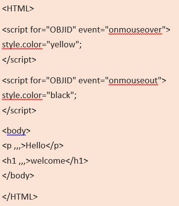

Выберите ответ:
В целях корректировки программы вместо троеточия во фрагменте кода, представленном ниже, следует поставить:
Вызов функции со скриптом;
Имя библиотеки функций;
ID;
ID с присвоенным ему значением.
